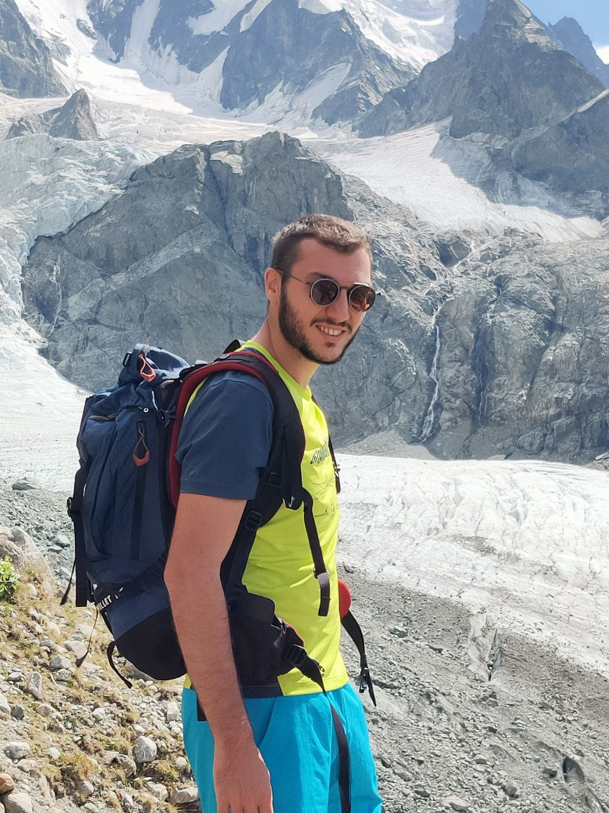

Emanuele Cavalleri

PhD candidate at the AnacletoLAB (Computational Biology and Bioinformatics Lab) -- Department of Computer Science, University of Milan, Italy.
I received a MSc degree (cum laude) in Bioinformatics at the University of Milan & Politecnico of Milan (joint degree). My Thesis was awarded the Open Science 2022-2024 first prize (AISA -- Scuola Normale Superiore Pisa). My research activity has been carried out in the construction and analysis of biomedical knowledge graphs. My work has focused on integrating and handling structured and unstructured biological and biomedical data by exploiting the application of bio-ontologies such as GO, Mondo, and HPO. Proficient in semantic web technologies including RDF, RDFS, and OWL for effective data representation. Additionally, I gained expertise in query processing in SPARQL and Cypher in the biomedical domain. Currently, I am working on the application of graph representation learning methods and exploring large language models to enhance biomedical knowledge graphs. I am member of the RNAcentral Consortium and KGs Interest Group at the Alan Turing Institute (UK).
Publications
2025
-
The RNAcentral Consortium
RNAcentral in 2026: genes and literature integration.
NAR.
(Accepted Dec 2025)
-
Emanuele Cavalleri, Paolo Perlasca, and Marco Mesiti
RNA-KG v2.0: an RNA-centered Knowledge Graph with Properties.
NAR Genomics and Bioinformatics.
(Accepted Nov 2025)
-
Emanuele Cavalleri, Matteo Castagna, and Marco Mesiti
A Semantic Schema-based Catalog for Identifying Joinable Columns via LLMs.
Proceedings of the Conference on Flexible Query Answering Systems (FQAS 2025).
(Published Sep 2025)
The paper was awarded the Conference Best Paper Award.
-
Marco Mesiti, Emanuele Cavalleri, Matteo Castagna, Paolo Perlasca, and Darya Shlyk
Prompt Engineering Approaches for Working with Biomedical Knowledge Graphs through LLMs.
Proceedings of the 5th National Conference on Artificial Intelligence (Ital-IA 2025).
(Accepted Sep 2025)
-
Alberto Cabri, Mauricio Soto Gomez, Emanuele Cavalleri, and Marco Mesiti
Sibyl: a web application for evaluating and comparing link prediction models on RNA-KG.
Proceedings of the Conference on Computational Intelligence methods for Bioinformatics and Biostatistics (CIBB 2025).
(Accepted June 2025)
-
Francesco Torgano, Mauricio Soto Gomez, Matteo Zignani, Jessica Gliozzo, Emanuele Cavalleri, Marco Mesiti, Elena Casiraghi, and Giorgio Valentini
RNA Knowledge-Graph analysis through homogeneous embedding methods.
Bioinformatics Advances.
(Published May 2025)
-
Marco Nicolini, Emanuele Saitto, Ruben Emilio Jimenez Franco, Emanuele Cavalleri, Aldo Javier Galeano Alfonso, Dario Malchiodi, Alberto Paccanaro, Peter N. Robinson, Elena Casiraghi, and Giorgio Valentini
Fine-tuning of conditional Transformers improves in silico enzyme prediction and generation.
Computational and Structural Biotechnology Journal.
(Published Mar 2025)
2024
-
Jessica Gliozzo, Mauricio Soto-Gomez, Valentina Guarino, Arturo Bonometti, Alberto Cabri, Emanuele Cavalleri, Justin Reese, Peter N Robinson, Marco Mesiti, Giorgio Valentini, and Elena Casiraghi
Intrinsic-Dimension analysis for guiding dimensionality reduction and data fusion in multi-omics data processing.
Artificial Intelligence in Medicine (AIIM).
(Published Dec 2024)
-
Francesco Torgano, Emanuele Cavalleri, Jessica Gliozzo, Federico Stacchietti, Emanuele Saitto, Marco Mesiti, Elena Casiraghi, and Giorgio Valentini
RNA Knowledge Graph analysis via graph embedding methods.
WSEAS Transactions on Biology and Biomedicine.
(Published Oct 2024)
-
Emanuele Cavalleri, Alberto Cabri, Mauricio Soto-Gomez, Sara Bonfitto, Paolo Perlasca, Jessica Gliozzo, Tiffany J Callahan, Justin Reese, Peter N Robinson, Elena Casiraghi, Giorgio Valentini, and Marco Mesiti
An ontology-based knowledge graph for representing interactions involving RNA molecules.
Nature Scientific Data.
(Published Aug 2024)
-
Darya Shlyk, Tudor Groza, Stefano Montanelli, Emanuele Cavalleri, and Marco Mesiti
REAL: A Retrieval-Augmented Entity Linking Approach for Biomedical Concept Recognition.
Proceedings of the Workshops of the ACL 2024 Conference.
(Published Aug 2024)
-
Emanuele Cavalleri, Mauricio Soto-Gomez, Ali Pashaeibarough, Dario Malchiodi, Harry Caufield, Justin Reese, Christopher J. Mungall, Peter N. Robinson, Elena Casiraghi, Giorgio Valentini, and Marco Mesiti
SPIREX: Improving LLM-based relation extraction from RNA-focused scientific literature using graph machine learning.
Proceedings of the Workshops of the VLDB 2024 Conference.
(Published Jul 2024)
-
Emanuele Cavalleri and Marco Mesiti
Construction and enhancement of an RNA-based knowledge graph for discovering new RNA drugs.
Proceedings of the 2024 IEEE 40th International Conference on Data Engineering (ICDE).
(Published Jul 2024)
-
Emanuele Cavalleri, Mauricio Soto-Gomez, Ali Pashaeibarough, Dario Malchiodi, Harry Caufield, Justin Reese, Christopher J. Mungall, Peter N. Robinson, Elena Casiraghi, Giorgio Valentini, and Marco Mesiti
Initial achievements in relation extraction from RNA-focused scientific papers.
Proceedings of the 32nd Symposium of Advanced Database Systems.
(Published Jun 2024)
-
Tiffany J. Callahan, Ignacio J. Tripodi, Adrianne L. Stefanski, Luca Cappelletti, Sanya B. Taneja, Jordan M. Wyrwa, Elena Casiraghi, Nicolas A. Matentzoglu, Justin Reese, Jonathan C. Silverstein, Charles Tapley Hoyt, Richard D. Boyce, Scott A. Malec, Deepak R. Unni, Marcin P. Joachimiak, Peter N. Robinson, Christopher J. Mungall, Emanuele Cavalleri, Tommaso Fontana, Giorgio Valentini, Marco Mesiti, Lucas A. Gillenwater, Brook Santangelo, Nicole A. Vasilevsky, Robert Hoehndorf, Tellen D. Bennett, Patrick B. Ryan, George Hripcsak, Michael G. Kahn, Michael Bada, William A. Baumgartner Jr, and Lawrence E. Hunter
An Open-Source Knowledge Graph Ecosystem for the Life Sciences.
Nature Scientific Data.
(Published Apr 2024)
-
Emanuele Cavalleri and Marco Mesiti
On the extraction of meaningful RNA interactions from Scientific Publications through LLMs and SPIRES.
Proceedings of the Workshops of the EDBT/ICDT 2024 Joint Conference.
(Published Mar 2024)
-
Marco Nicolini, Dario Malchiodi, Alberto Cabri, Emanuele Cavalleri, Marco Mesiti, Alberto Paccanaro, Peter N. Robinson, Justin Reese, Elena Casiraghi, and Giorgio Valentini
Fine-tuning of Conditional Transformers Improves the Generation of Functionally Characterized Proteins.
Proceedings of the 17th International Joint Conference on Biomedical Engineering Systems and Technologies.
(Published Jan 2024)
2023
-
Emanuele Cavalleri, Sara Bonfitto, Alberto Cabri, Jessica Gliozzo, Paolo Perlasca, Mauricio Soto-Gomez, Gabriella Trucco, Elena Casiraghi, Giorgio Valentini, and Marco Mesiti
Towards the Construction of an RNA-centered Knowledge Graph.
Proceedings of the 31st Symposium of Advanced Database Systems.
(Published Sep 2023)
-
Emanuele Cavalleri, Sara Bonfitto, Alberto Cabri, Jessica Gliozzo, Paolo Perlasca, Mauricio Soto-Gomez, Gabriella Trucco, Elena Casiraghi, Giorgio Valentini, and Marco Mesiti
A Meta-Graph for the Construction of an RNA-Centered Knowledge Graph.
Bioinformatics and Biomedical Engineering.
(Published June 2023)
Other research activities
External home pages
E-mail address: emanuele dot cavalleri at unimi dot it